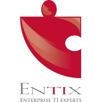
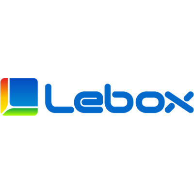

Experiencias Profesionales
Desde 2022 hasta la actualidad, he laborado en varias empresas de tecnologías en distintas áreas:
- Desarrollador Backend (Practica)
- 13 de Mayo del 2021 - 13 de Agosto del 2021
- Desarrollador de un algoritmo de conteo de abejas utilizando YOLOV4 con Docker y también de una API JSON que conecta el algoritmo con una BDD de Oracle con NodeJS.
- Herramientas utilizadas: Docker, Git, JavaScript, JSON, NodeJS
- Contacto Laboral:
- Nombre: Mario Fuenzalida
- Puesto: Gerente de Operaciones
- Correo: mario.fs@theearthsays.cl
- Telefono celular: +569 9857 7931
-

- Desarrollador ETL (Practica)
- 23 de Febrero del 2022 - 23 de Mayo del 2022
- Diseñador y Desarrollador de procesos de transformación de datos CSV a BDD Oracle y elaboración de la documentación de ellos.
- Herramientas utilizadas: Informatica Powercenter, SQL, Oracle
- Contacto Laboral:
- Nombre: Cristian Campos
- Puesto: Jefe de Proyecto – Scrum Master
- Correo: ccampos@entix.cl
- Telefono celular: +569 8190 6909
-

- Analista QA
- 22 de Mayo del 2023 - 22 de Agosto del 2023
- Encargado de la ejecución, y documentación mediante Jira, de pruebas de humo, unitarias y de regresión en un entorno de certificación de una página de agendamiento Medicap, también encargado del diseño y ejecución de pruebas automatizadas de Selenium con Python y de las pruebas de API con Insomnia y Postman.
- Herramientas utilizadas: Selenium, Jira, Python, Postman, Insomnia, SQL
- Contacto Laboral:
- Nombre: David Olivero
- Puesto: Jefe de desarrollo I+D+I
- Correo: dolivero@lebox.com
- Telefono celular: +569 3075 1435
- Automatizador QA
- 11 de Septiembre del 2023 - 15 de Diciembre del 2023
- Diseño y ejecución de pruebas automatizadas mediante Robomotion, Elaboración de material de aprendizaje de Karate Framework.
- Herramientas utilizadas: JavaScript, Java, Robomotion, Karate Framework.
- Contacto Laboral:
- Nombre: Christopher Barahona
- Puesto: Supervisor QA Senior
- Correo: cbarahona@qanova.cl
- Telefono celular: +569 7887 4374